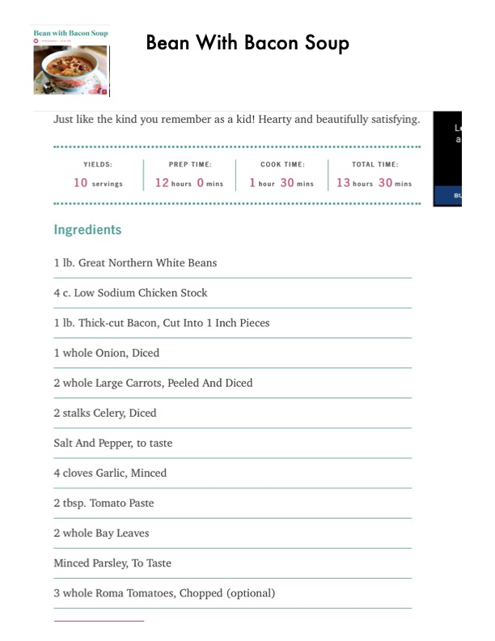

Bean With Bacon Soup

Original cookbook page 264
Just like the kind you remember as a kid! Hearty and beautifully satisfying. Classic comfort food with great northern beans and bacon.
Prep: 20 minutes (plus 12 hours soaking) • Cook: 1 hour 30 minutes • Total: 13 hours 30 minutes
Ingredients
- 1 lb. Great Northern White Beans
- 4 c. Low Sodium Chicken Stock
- 4 cups water (plus extra for soaking)
- 1 lb. Thick-cut Bacon, Cut Into 1 Inch Pieces
- 1 whole Onion, Diced
- 2 whole Large Carrots, Peeled And Diced
- 2 stalks Celery, Diced
- Salt And Pepper, to taste
- 4 cloves Garlic, Minced
- 2 tbsp. Tomato Paste
- 2 whole Bay Leaves
- Minced Parsley, To Taste
- 3 whole Roma Tomatoes, Chopped (optional)
Instructions
- SOAK BEANS: Pick through the beans and rinse. Place in a bowl, cover with water by two inches, and soak overnight.
- COOK BEANS: Drain the beans and place in a pot. Add the chicken stock and 4 cups of water. Bring to a boil, then reduce to a simmer.
- COOK BACON: While beans are cooking, cook the bacon in a large skillet over medium heat until just barely crisp. Remove to a paper towel-lined plate. Add 2/3 of the bacon to the beans and reserve the rest for garnish.
- COOK VEGETABLES: Drain the bacon grease from the pan and add the onions, carrots, and celery. Season with salt and pepper and cook until just beginning to soften, about 3 to 4 minutes. Add the garlic and tomato paste and cook for another minute or two.
- COMBINE AND SIMMER: Add the vegetables to the beans. Add the bay leaf and stir. Cover and cook on low (to medium-low) until the beans are tender, about 1½ hours. Add a cup of broth if the liquid level gets too low.
- SERVE: Taste and add more salt and pepper if needed. If desired, stir in the tomatoes. Serve with chopped reserved bacon and chopped parsley.
📝 Recipe Notes
Multi-page recipe combined from pages 264-265. Requires overnight soaking of beans. Perfect comfort food for cold days. Roma tomatoes are optional for serving.
Recipe #264 from collection